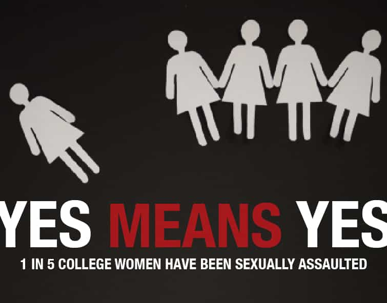

< < < Back
College Poster Suggests That Only Men Are Ever Guilty Of Rape By Intoxication – Return Of Kings
This year an “old” anti-sexual assault poster from Coastal Carolina University made the rounds online. It features two hypothetical students, Jake and Josie, who were both drunk and “hooked up.” The poster then tells readers that Josie could not consent and Jake was charged with “rape” (the college-adjudicated style).
Men are then warned that a woman who is intoxicated (a sip of alcohol, a drink, two drinks, what?) cannot consent and that “proceeding” is a crime (again, college rules or actual legal rules evaluated in a courtroom?).
Coastal Carolina University was confronted about the poster and admitted it was theirs, adding the caveat that it was “old” (implying that somehow anti-male rape culture hysteria on campus has gotten better, which is blatantly false). Talking about how the poster is seven years old and somehow outdated is just a excuse.
Because affirmative consent, which sinks male due process rights to a depth lower than the Pacific Ocean’s Mariana Trench, is even more euphemistic than the US missile dubbed “The Peacemaker,” the removal of an explicit poster about exclusive male responsibility and criminalization only of their behavior does not negate how this concept is still used to falsely label men as rapists.
A public airing of what feminist college “rape courts” have been doing for years
https://twitter.com/TheBrandonMorse/status/619858946593914880/photo/1?ref_src=twsrc%5Etfw
Some may be saying, “Hold up, David! This is ONE university amongst hundreds upon hundreds across the US! Can you really be saying this based on one poster?” Look around you, though. If your college is not saturated with speculation about which drunk woman (drunkenness usually being assessed by her, not objectively) was taken advantage of by which man (almost guaranteed to have been drunk, too), I don’t think you’ve spent enough time on campus.
In a now infamous Occidental College fiasco, an inebriated male student was expelled for having had sex with a more or less equally intoxicated female. Although Slate is usually profoundly skilled at presenting a one-sided diatribe that straw mans any non-leftist position, this piece by Amanda Hess is the one of the better ones you will read from that publication.
Despite the injection of some feel-good segues that try to distract readers, the article is a fairly damning indictment of the parlous, gender biased state of college prosecutions.
It’s not surprising that Occidental is Obama’s original alma mater

Remember when many SJWs and politicians suddenly stopped using this “statistic”? I wonder why.
The girl in question at Occidental, “Jane Doe,” was checked on by multiple people, all of whom did not believe she was ever being sexually assaulted. One student, schooled in so-called sexual assault responsiveness (“sensitivity” training which is usually administered by the same people watering down campus due process), walked in on the couple having sex. The act, as he later recounted, struck him as looking like no more than two people engaged in consensual coitus.
The Coastal Carolina University poster is simply an explicit rendering of what is practiced every day on the majority of American campuses. Of course, SJWs are unable to get their gender studies-driven overlords to prosecute every man having intercourse with a tipsy or intoxicated (but not incapacitated) woman.
The epic collapse of “sign, sealed and delivered” witch hunts like the Duke lacrosse pogrom or the uncovered lies of those suffering from relevance deprivation syndrome, such as Emma Sulkowicz and Jackie Coakley, indicate an overextension of SJW antics that even ringleaders can’t control. Having observed other falsely convicted students, or those convicted without any evidence, resort to legal options, many other men are now doing the same.
Occidental is really one of countless colleges adopting such classically illiberal standards for ruining the lives of young men without evidence, yet it is befitting that Barack Obama, a strident advocate of affirmative consent, is an alumnus of Occidental.
Keep your eyes and ears alert, then exploit
We were supposed to believe the UVA fraternity “gang rape” hoax, so why should anyone believe that a girl was raped through intoxication when both she and the male were drunk?
Posters like Coastal Carolina University’s, regardless of how old they are, are a veritable goldmine for exposing again the twisted, bigoted ideology of SJWs. By all means we must continue to honor the need for positive evidence to establish crimes in courtrooms, not “rape tribunals” based on perverse feminist social science theories. Nonetheless, frequently enough, SJWs come forward with blunders that would make The Three Stooges look like very polished operators.
If anything, the moronic dissemination of the poster demonstrates how SJWs believe they are a world unto themselves. The hate is so ingrained into their mindsets that euphemisms like affirmative consent are not ones that they can forever use without slipping up. Eventually, the simmering prejudice boils up in a volcano of anti-male rage.
Oh, and doesn’t anyone else find it strange that Jake is drinking in the photo and Josie isn’t? I guess she’s the rapist now.
Read More: One College’s Bizarre Approach To Sexual Assault